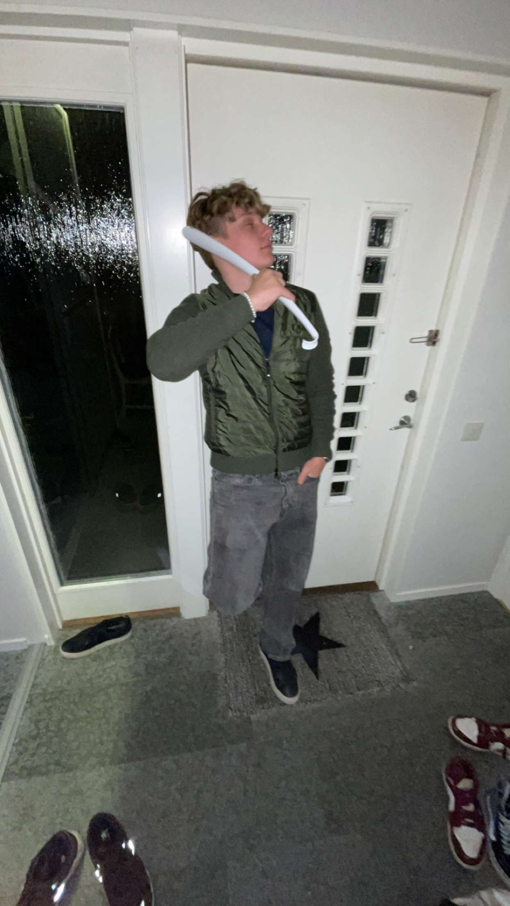

Hammarby
Min pappa är uppväxt på Södermalm så Hammarby är en självklarhet. Jag ska även flytta till Kvarnholmen snart, vilket ligger precis intill Södermalm.
Min pappa är uppväxt på Södermalm så Hammarby är en självklarhet. Jag ska även flytta till Kvarnholmen snart, vilket ligger precis intill Södermalm.
På helger jobbar jag för ett företag som heter CDS. Det är ett inhyrt företag av Costco så jag jobbar i Costcos varuhus i Arninge.
